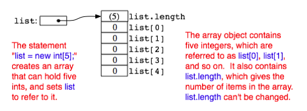

Section 7.1
Creating and Using Arrays
When a number of data items are chunked together into a unit, the result is a data structure. Data structures can be very complex, but in many applications, the appropriate data structure consists simply of a sequence of data items. Data structures of this simple variety can be either arrays or records.
The term "record" is not used in Java. A record is essentially the same as a Java object that has instance variables only, but no instance methods. Some other languages, which do not support objects in general, nevertheless do support records. The C programming language, for example, is not object-oriented, but it has records, which in C go by the name "struct." The data items in a record -- in Java, an object's instance variables -- are called the fields of the record. Each item is referred to using a field name. In Java, field names are just the names of the instance variables. The distinguishing characteristics of a record are that the data items in the record are referred to by name and that different fields in a record are allowed to be of different types. For example, if the class Person is defined as:
class Person {
String name;
int id_number;
Date birthday;
int age;
}
then an object of class Person could be considered to be a record with four fields. The field names are name, id_number, birthday, and age. Note that the fields are of various types: String, int, and Date.
Because records are just a special type of object, I will not discuss them further.
7.1.1 Arrays
Like a record, an array is a sequence of items. However, where items in a record are referred to by name, the items in an array are numbered, and individual items are referred to by their position number. Furthermore, all the items in an array must be of the same type. The definition of an array is: a numbered sequence of items, which are all of the same type. The number of items in an array is called the length of the array. The position number of an item in an array is called the index of that item. The type of the individual items in an array is called the base type of the array.
The base type of an array can be any Java type, that is, one of the primitive types, or a class name, or an interface name. If the base type of an array is int, it is referred to as an "array of ints." An array with base type String is referred to as an "array of Strings." However, an array is not, properly speaking, a list of integers or strings or other values. It is better thought of as a list of variables of type int, or of type String, or of some other type. As always, there is some potential for confusion between the two uses of a variable: as a name for a memory location and as a name for the value stored in that memory location. Each position in an array acts as a variable. Each position can hold a value of a specified type (the base type of the array). The value can be changed at any time. Values are stored in an array. The array is the container, not the values.
The items in an array -- really, the individual variables that make up the array -- are more often referred to as the elements of the array. In Java, the elements in an array are always numbered starting from zero. That is, the index of the first element in the array is zero. If the length of the array is N, then the index of the last element in the array is N-1. Once an array has been created, its length cannot be changed.
Java arrays are objects. This has several consequences. Arrays are created using a form of the new operator. No variable can ever hold an array; a variable can only refer to an array. Any variable that can refer to an array can also hold the value null, meaning that it doesn't at the moment refer to anything. Like any object, an array belongs to a class, which like all classes is a subclass of the class Object. The elements of the array are, essentially, instance variables in the array object, except that they are referred to by number rather than by name.
Nevertheless, even though arrays are objects, there are differences between arrays and other kinds of objects, and there are a number of special language features in Java for creating and using arrays.
7.1.2 Using Arrays
Suppose that A is a variable that refers to an array. Then the element at index k in A is referred to as A[k]. The first element is A[0], the second is A[1], and so forth. "A[k]" is really a variable, and it can be used just like any other variable. You can assign values to it, you can use it in expressions, and you can pass it as a parameter to a subroutine. All of this will be discussed in more detail below. For now, just keep in mind the syntax
array-variable [ integer-expression ]
for referring to an element of an array.
Although every array, as an object, belongs to some class, array classes never have to be defined. Once a type exists, the corresponding array class exists automatically. If the name of the type is BaseType, then the name of the associated array class is BaseType[]. That is to say, an object belonging to the class BaseType[] is an array of items, where each item is a variable of type BaseType. The brackets, "[]", are meant to recall the syntax for referring to the individual items in the array. "BaseType[]" is read as "array of BaseType" or "BaseType array." It might be worth mentioning here that if ClassA is a subclass of ClassB, then the class ClassA[] is automatically a subclass of ClassB[].
The base type of an array can be any legal Java type. From the primitive type int, the array type int[] is derived. Each element in an array of type int[] is a variable of type int, which holds a value of type int. From a class named Shape, the array type Shape[] is derived. Each item in an array of type Shape[] is a variable of type Shape, which holds a value of type Shape. This value can be either null or a reference to an object belonging to the class Shape. (This includes objects belonging to subclasses of Shape.)
Let's try to get a little more concrete about all this, using arrays of integers as our first example. Since int[] is a class, it can be used to declare variables. For example,
int[] list;
creates a variable named list of type int[]. This variable is capable of referring to an array of ints, but initially its value is null (if list is a member variable in a class) or undefined (if list is a local variable in a method). The new operator is used to create a new array object, which can then be assigned to list. The syntax for using new with arrays is different from the syntax you learned previously. As an example,
list = new int[5];
creates an array of five integers. More generally, the constructor "new BaseType[N]" is used to create an array belonging to the class BaseType[]. The value N in brackets specifies the length of the array, that is, the number of elements that it contains. Note that the array "knows" how long it is. The length of the array is an instance variable in the array object. In fact, the length of an array, list, can be referred to as list.length. (However, you are not allowed to change the value of list.length, so it's really a "final" instance variable, that is, one whose value cannot be changed after it has been initialized.)
The situation produced by the statement "list = new int[5];" can be pictured like this:

Note that the newly created array of integers is automatically filled with zeros. In Java, a newly created array is always filled with a known, default value: zero for numbers, false for boolean, the character with Unicode number zero for char, and null for objects.
The elements in the array, list, are referred to as list[0], list[1], list[2], list[3], and list[4]. (Note again that the index for the last item is one less than list.length.) However, array references can be much more general than this. The brackets in an array reference can contain any expression whose value is an integer. For example if indx is a variable of type int, then list[indx] and list[2*indx+7] are syntactically correct references to elements of the array list. Thus, the following loop would print all the integers in the array, list, to standard output:
for (int i = 0; i < list.length; i++) {
System.out.println( list[i] );
}
The first time through the loop, i is 0, and list[i] refers to list[0]. So, it is the value stored in the variable list[0] that is printed. The second time through the loop, i is 1, and the value stored in list[1] is printed. The loop ends after printing the value of list[4], when i becomes equal to 5 and the continuation condition "i < list.length" is no longer true. This is a typical example of using a loop to process an array. I'll discuss more examples of array processing throughout this chapter.
Every use of a variable in a program specifies a memory location. Think for a moment about what the computer does when it encounters a reference to an array element, list[k], while it is executing a program. The computer must determine which memory location is being referred to. To the computer, list[k] means something like this: "Get the pointer that is stored in the variable, list. Follow this pointer to find an array object. Get the value of k. Go to the k-th position in the array, and that's the memory location you want." There are two things that can go wrong here. Suppose that the value of list is null. If that is the case, then list doesn't even refer to an array. The attempt to refer to an element of an array that doesn't exist is an error that will cause an exception of type NullPointerException to be thrown. The second possible error occurs if list does refer to an array, but the value of k is outside the legal range of indices for that array. This will happen if k < 0 or if k >= list.length. This is called an "array index out of bounds" error. When an error of this type occurs, an exception of type ArrayIndexOutOfBoundsException is thrown. When you use arrays in a program, you should be mindful that both types of errors are possible. However, array index out of bounds errors are by far the most common error when working with arrays.
7.1.3 Array Initialization
For an array variable, just as for any variable, you can declare the variable and initialize it in a single step. For example,
int[] list = new int[5];
If list is a local variable in a subroutine, then this is exactly equivalent to the two statements:
int[] list; list = new int[5];
(If list is an instance variable, then of course you can't simply replace "int[] list = new int[5];" with "int[] list; list = new int[5];" since the assignment statement "list = new int[5];" is only legal inside a subroutine.)
The new array is filled with the default value appropriate for the base type of the array -- zero for int and null for class types, for example. However, Java also provides a way to initialize an array variable with a new array filled with a specified list of values. In a declaration statement that creates a new array, this is done with an array initializer. For example,
int[] list = { 1, 4, 9, 16, 25, 36, 49 };
creates a new array containing the seven values 1, 4, 9, 16, 25, 36, and 49, and sets list to refer to that new array. The value of list[0] will be 1, the value of list[1] will be 4, and so forth. The length of list is seven, since seven values are provided in the initializer.
An array initializer takes the form of a list of values, separated by commas and enclosed between braces. The length of the array does not have to be specified, because it is implicit in the list of values. The items in an array initializer don't have to be constants. They can be variables or arbitrary expressions, provided that their values are of the appropriate type. For example, the following declaration creates an array of eight Colors. Some of the colors are given by expressions of the form "new Color(r,g,b)" instead of by constants:
Color[] palette = {
Color.BLACK,
Color.RED,
Color.PINK,
new Color(0,180,0), // dark green
Color.GREEN,
Color.BLUE,
new Color(180,180,255), // light blue
Color.WHITE
};
A list initializer of this form can be used only in a declaration statement, to give an initial value to a newly declared array variable. It cannot be used in an assignment statement to assign a value to a variable that has been previously declared. However, there is another, similar notation for creating a new array that can be used in an assignment statement or passed as a parameter to a subroutine. The notation uses another form of the new operator to both create and initialize a new array object at the same time. (The rather odd syntax is similar to the syntax for anonymous classes, which were discussed in Subsection 5.7.3.) For example to assign a new value to an array variable, list, that was declared previously, you could use:
list = new int[] { 1, 8, 27, 64, 125, 216, 343 };
The general syntax for this form of the new operator is
new base-type [ ] { list-of-values }
This is actually an expression whose value is a reference to a newly created array object. This means that it can be used in any context where an object of type base-type[] is expected. For example, if makeButtons is a method that takes an array of Strings as a parameter, you could say:
makeButtons( new String[] { "Stop", "Go", "Next", "Previous" } );
Being able to create and use an array "in place" in this way can be very convenient, in the same way that anonymous nested classes are convenient.
By the way, it is perfectly legal to use the "new BaseType[] { ... }" syntax instead of the array initializer syntax in the declaration of an array variable. For example, instead of saying:
int[] primes = { 2, 3, 5, 7, 11, 13, 17, 19 };
you can say, equivalently,
int[] primes = new int[] { 2, 3, 5, 7, 11, 17, 19 };
In fact, rather than use a special notation that works only in the context of declaration statements, I prefer to use the second form.
One final note: For historical reasons, an array declaration such as
int[] list;
can also be written as
int list[];
which is a syntax used in the languages C and C++. However, this alternative syntax does not really make much sense in the context of Java, and it is probably best avoided. After all, the intent is to declare a variable of a certain type, and the name of that type is "int[]". It makes sense to follow the "type-name variable-name;" syntax for such declarations.